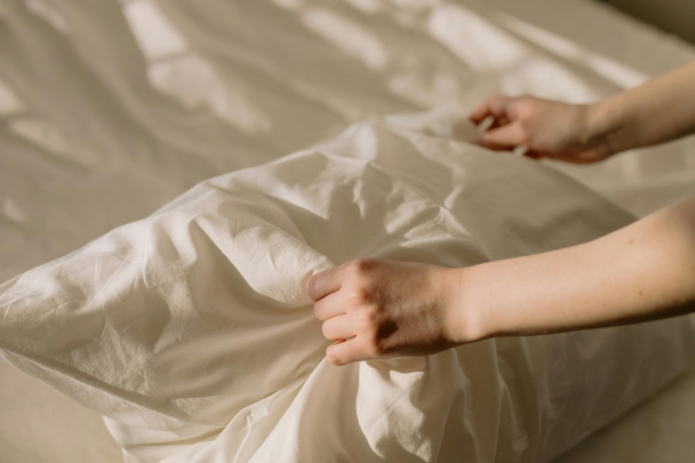

Daily Habits for Healthier Skin
Good skin is not just about products, it is also about healthy habits. Here are some simple lifestyle changes that can improve your skin:
-
Tame Stress

Image source: Pexels
Stress can directly influence the amount of oil or sebum our face produces. The more stress that you feel, it can either be physical or emotional, the higher the cortisol levels are in the body. Thus, the sebaceous glands in the skin are more active. [Source: WebMD]
-
Get Quality Sleep

Image source: Pexels
If your body does not have enough sleep, you might feel tired and it could kick-start that cortisol surge, which puts you at more risk for acne. Make sleep a priority to give your body enough rest and your acne a chance to heal. [Source: WebMD]
-
Clean Your Phone

Image source: Pexels
When was the last time you cleaned you cellphone or its case? When you use your phone, your fingers probably touch many things and the bacteria in the things you have touched maybe transferred into your phones. Thus, bacteria can be harbored. Wipe your phone down with a slightly damp microfiber cloth daily to avoid bacteria harboring in your phone's screen. [Source: WebMD]
-
Change Sheets Weekly
Image source: Pexels
If there is dirt and oil on your sheets that you sleep in, it will rub off on your skin while you are sleeping. This is especially important for your pillowcases because it is where you rest your face. Change your sheets weekly to ensure there are no dust or dirt that can be transferred on your skin. [Source: Rush]
-
Stay Hydrated
Image source: Pexels
Acne is caused by oil and dead skin cells clogging up the pores. Dry skin produces more oil and is more likely to be clogged by dead cells. Drinking plenty of water improves skin hydration and also improves immune system, which in turn helps prevent acne. Drink at least 68 ounces of water throughout the day to keep your skin hydrated and glowing. [Source: AdventHealth]
{kind=link}
{kind=link}
{kind=link}
{kind=link}
{kind=link}
Why These Habits Matter
Implementing these habits can not only help reduce acne but also improve your overall well-being. Small changes can have a big impact on your skin health. Start with one habit today and build your routine over time!